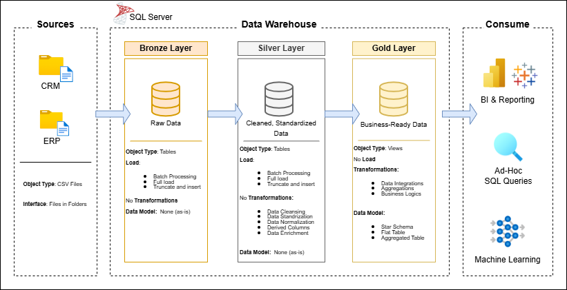

Data EngineeringSQL Server · Medallion ArchitectureETL · Star Schema
Solución integral de almacenamiento y analítica de datos, desde la construcción de un data warehouse
hasta la generación de insights accionables. Diseñado como proyecto de portafolio, destaca buenas
prácticas de ingeniería de datos y analítica.
Data Architecture
La arquitectura sigue el patrón Medallion Architecture con capas
Bronze, Silver y Gold:

Fig. 1 — Arquitectura Medallion del Data Warehouse.
Bronze Layer: Almacena los datos crudos tal como llegan desde los sistemas origen. Los datos se ingieren desde archivos CSV hacia SQL Server.
Silver Layer: Incluye procesos de limpieza, estandarización y normalización para preparar los datos para el análisis.
Gold Layer: Contiene datos listos para negocio, modelados en un esquema estrella para reporting y analítica.
Project Overview
Este proyecto involucra:
Data Architecture: Diseño de un Data Warehouse moderno usando Medallion Architecture con capas Bronze, Silver y Gold.
ETL Pipelines: Extracción, transformación y carga de datos desde los sistemas origen hacia el warehouse.
Data Modeling: Desarrollo de tablas de hechos y dimensiones optimizadas para consultas analíticas.
Project Requirements
Building the Data Warehouse (Data Engineering)
Objective
Desarrollar un data warehouse moderno usando SQL Server para consolidar datos de ventas,
habilitando reporting analítico y toma de decisiones informada.
Specifications
Data Sources: Importar datos desde dos sistemas origen (ERP y CRM) provistos como archivos CSV.
Data Quality: Limpiar y resolver problemas de calidad de datos previo al análisis.
Integration: Combinar ambas fuentes en un modelo de datos unificado, diseñado para consultas analíticas.
Scope: Enfocado únicamente en el dataset más reciente; no se requiere historización.
Documentation: Documentación clara del modelo de datos para stakeholders de negocio y equipos de analítica.
Repository Structure
data-warehouse-project/
│
├── datasets/ # Raw datasets (ERP and CRM data)
│
├── docs/ # Project documentation and architecture
│ ├── Architecture.png # Project architecture diagram
│ ├── data_catalog.md # Dataset catalog with field descriptions
│ ├── data_flow.drawio # Data flow diagram
│ ├── data_models.drawio # Data models (star schema)
│ └── naming-conventions.md # Naming guidelines for tables, columns and files
│
├── scripts/ # SQL scripts for ETL and transformations
│ ├── bronze/ # Scripts for extracting and loading raw data
│ ├── silver/ # Scripts for cleaning and transforming data
│ └── gold/ # Scripts for creating analytical models
│
├── tests/ # Test scripts and quality files
│
└── README.md # Project overview and instructions